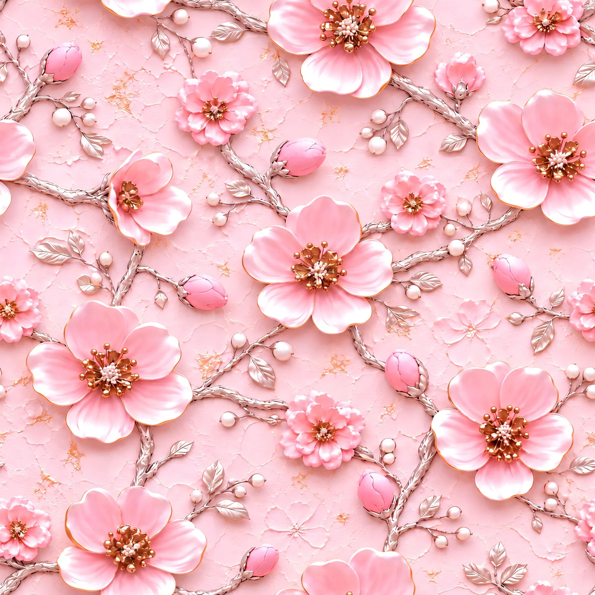
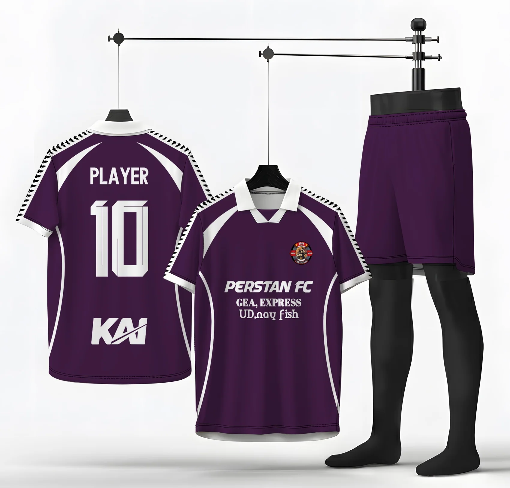
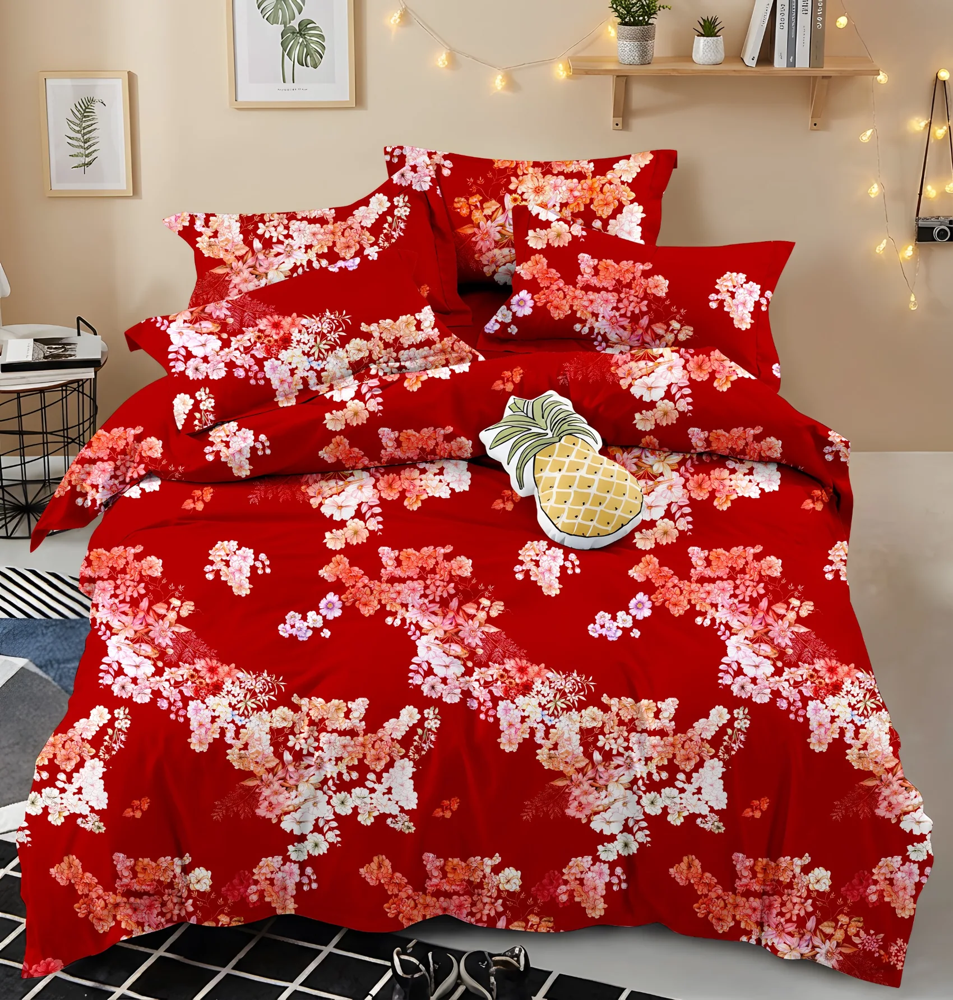
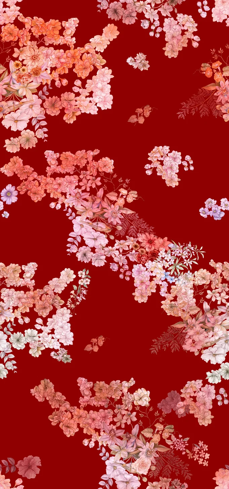

Vector & Textile
Manual tracing, motif redraw, seamless pattern, pattern repeat, dan color adjustment.
Graphic Designer & Textile Pattern Specialist
Dari detail vector tracing hingga motif tekstil, jersey, dan eksplorasi visual berbantuan AI. Aku merancang karya yang bukan hanya menarik dilihat, tetapi juga memahami kebutuhan penerapannya.




Aku Muhammad Nuryadi, graphic designer dengan pengalaman lebih dari 6 tahun di bidang desain grafis, tekstil, apparel, dan produksi kreatif.
Keahlianku mencakup manual vector tracing, redraw motif, seamless repeat, placement desain jersey, dan konten media sosial. Pengalaman di pre-press dan pengoperasian Mimaki membantuku memahami hubungan antara artwork digital dan hasil produksi.
Akhir-akhir ini aku juga mengeksplorasi AI-assisted 3D-style patterns: mengembangkan konsep, memilih gambar AI, melakukan upscale, dan mengolah repeat di Photoshop.
Koleksi motif tekstil, jersey, bedding, visual AI-assisted, dan desain promosi. Pilih kategori, cari judul, atau buka setiap karya untuk melihat detailnya.
Coba kata kunci lain atau kembalikan filter ke “All projects”.
Eksplorasi visual yang didukung oleh ketelitian desain dan pemahaman kebutuhan produksi.
Manual tracing, motif redraw, seamless pattern, pattern repeat, dan color adjustment.
Placement motif, mapping desain, mockup, final artwork, dan pre-press.
Prompt development, visual selection, upscale, dan editing repeat di Photoshop.
Instagram feed, promosi, layout, menu, banner, dan visual komunikasi brand.
Dari apparel, produksi cetak, dan tekstil hingga konten brand. Setiap peran membentuk caraku berpikir sebagai desainer.
Tracing/redraw motif sprei, menyiapkan repeat dan file siap cetak, serta mendukung konten Instagram produk.
Desain dan publikasi konten sosial media, materi promosi, banner, serta menu untuk kebutuhan brand dan outlet.
Memimpin alur print–press, melakukan quality check artwork, dan mengoperasikan Mimaki TS-100 serta JV-100.
Pre-press desain custom, redraw, proofing warna, persiapan artwork, dan handoff ke operator print.
Pewarnaan komik digital dan dukungan layout untuk kebutuhan terbit.
Butuh pattern, desain apparel, atau visual untuk brand? Yuk ngobrol dan cari ide yang cocok untuk proyekmu.